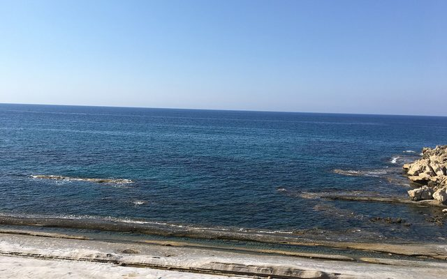

जलप्रपात


घाटी (कैन्यन)


झील
 अबांत झील प्रकृति उद्यानबोलू
अबांत झील प्रकृति उद्यानबोलू उज़ुनगोलत्राबज़ोन
उज़ुनगोलत्राबज़ोन एगिर्दिर झीलइस्पार्ता
एगिर्दिर झीलइस्पार्ता काराग्योल (बोरचका)आर्तविन
काराग्योल (बोरचका)आर्तविन क्योयजेइज़ झीलमुग़ला
क्योयजेइज़ झीलमुग़ला गोलजुक क्रेटर झील प्रकृति उद्यानइस्पार्ता
गोलजुक क्रेटर झील प्रकृति उद्यानइस्पार्ता चिल्दिर झीलअर्दाहान
चिल्दिर झीलअर्दाहान तुज़ झील (नमक झील)अक्साराय
तुज़ झील (नमक झील)अक्साराय नेमरुत क्रेटर झीलबितलिस
नेमरुत क्रेटर झीलबितलिस बाफ़ा झील प्रकृति उद्यानमुग़ला
बाफ़ा झील प्रकृति उद्यानमुग़ला बेयशेहिर झील राष्ट्रीय उद्यानकोन्या
बेयशेहिर झील राष्ट्रीय उद्यानकोन्या मेके झीलकोन्या
मेके झीलकोन्या येदिगोल्लेर राष्ट्रीय उद्यानबोलू
येदिगोल्लेर राष्ट्रीय उद्यानबोलू वान झीलवान
वान झीलवान सपांजा झीलसाकार्या
सपांजा झीलसाकार्या साल्दा झीलबुर्दुर
साल्दा झीलबुर्दुर हज़ार झीलएलाज़िग
हज़ार झीलएलाज़िगस्की रिज़ॉर्ट


राफ़्टिंग


ट्रेकिंग मार्ग


प्राकृतिक स्थल

अलागादी कछुआ तटगिर्ने (किरेनिया) कराइन गुफाअंताल्या
कराइन गुफाअंताल्या कार्पाज़ राष्ट्रीय उद्यान और गोल्डन बीचइस्केले (त्रिकोमो)जेहेन्नेमाग्ज़ी गुफाएँज़ोंगुलदाक
कार्पाज़ राष्ट्रीय उद्यान और गोल्डन बीचइस्केले (त्रिकोमो)जेहेन्नेमाग्ज़ी गुफाएँज़ोंगुलदाक दुपनिसा गुफाकिर्कलारेली
दुपनिसा गुफाकिर्कलारेली बेशपारमाक पर्वत (पेंटाडैक्टिलोस)गिर्ने (किरेनिया)
बेशपारमाक पर्वत (पेंटाडैक्टिलोस)गिर्ने (किरेनिया) यानारताश (काइमेरा)अंताल्या
यानारताश (काइमेरा)अंताल्या सिलिफ़्के अस्तिम गुफामेर्सिन
सिलिफ़्के अस्तिम गुफामेर्सिन सिलिफ़्के स्वर्ग और नरक गर्तमेर्सिन
सिलिफ़्के स्वर्ग और नरक गर्तमेर्सिन